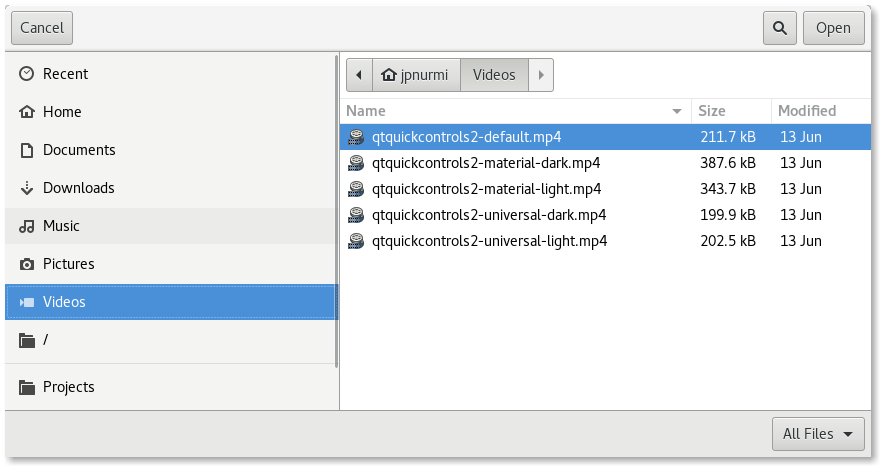

FileDialog QML Type
A file dialog. More...
| Import Statement: | import QtQuick.Dialogs |
| Since: | Qt 6.2 |
| Inherits: |
Properties
- acceptLabel : string
- currentFolder : url
- defaultSuffix : string
- fileMode : enumeration
- nameFilters : list<string>
- options : flags
- rejectLabel : string
- selectedFile : url
- selectedFiles : list<url>
- selectedNameFilter
- selectedNameFilter.extensions : list<string>
- selectedNameFilter.globs : list<string>
- selectedNameFilter.index : int
- selectedNameFilter.name : string
Detailed Description
The FileDialog type provides a QML API for file dialogs.

To show a file dialog, construct an instance of FileDialog, set the desired properties, and call open(). The currentFile or currentFiles properties can be used to determine the currently selected file(s) in the dialog. The selectedFile and selectedFiles properties are updated only after the final selection has been made by accepting the dialog.
import QtCore import QtQuick import QtQuick.Controls import QtQuick.Dialogs ApplicationWindow { width: 640 height: 480 visible: true header: ToolBar { Button { text: qsTr("Choose Image...") onClicked: fileDialog.open() } } Image { id: image anchors.fill: parent fillMode: Image.PreserveAspectFit } FileDialog { id: fileDialog currentFolder: StandardPaths.standardLocations(StandardPaths.PicturesLocation)[0] onAccepted: image.source = selectedFile } }
Availability
A native platform file dialog is currently available on the following platforms:
- Android
- iOS
- Linux (when running with the GTK+ platform theme)
- macOS
- Windows
Qt Quick Dialogs uses a Qt Quick implementation as a fallback on platforms that do not have a native implementation available.
See also FolderDialog and StandardPaths.
Property Documentation
acceptLabel : string |
This property holds the label text shown on the button that accepts the dialog.
When set to an empty string, the default label of the underlying platform is used. The default label is typically Open or Save depending on which fileMode the dialog is used in.
The default value is an empty string.
See also rejectLabel.
currentFolder : url |
This property holds the folder where files are selected. It can be set to control the initial directory that is shown when the dialog is opened.
For selecting a folder, use FolderDialog instead.
defaultSuffix : string |
This property holds a suffix that is added to selected files that have no suffix specified. The suffix is typically used to indicate the file type (e.g. "txt" indicates a text file).
If the first character is a dot ('.'), it is removed.
fileMode : enumeration |
This property holds the mode of the dialog.
Available values:
| Constant | Description |
|---|---|
FileDialog.OpenFile | The dialog is used to select an existing file (default). |
FileDialog.OpenFiles | The dialog is used to select multiple existing files. |
FileDialog.SaveFile | The dialog is used to select any file. The file does not have to exist. |
This property holds the filters that restrict the types of files that can be selected.
FileDialog { nameFilters: ["Text files (*.txt)", "HTML files (*.html *.htm)"] }
Different platforms may restrict the files that can be selected in different ways. For example, macOS will disable file entries that do not match the filters, whereas Windows will hide them.
Note: *.* is not a portable filter, because the historical assumption that the file extension determines the file type is not consistent on every operating system. It is possible to have a file with no dot in its name (for example, Makefile). In a native Windows file dialog, *.* will match such files, while in other types of file dialogs it may not. So it is better to use * if you mean to select any file.
See also selectedNameFilter.
options : flags |
This property holds the various options that affect the look and feel of the dialog.
By default, all options are disabled.
Options should be set before showing the dialog. Setting them while the dialog is visible is not guaranteed to have an immediate effect on the dialog (depending on the option and on the platform).
Available options:
| Constant | Description |
|---|---|
FileDialog.DontResolveSymlinks | Don't resolve symlinks in the file dialog. By default symlinks are resolved. |
FileDialog.DontConfirmOverwrite | Don't ask for confirmation if an existing file is selected. By default confirmation is requested. |
FileDialog.ReadOnly | Indicates that the dialog doesn't allow creating directories. |
FileDialog.HideNameFilterDetails | Indicates if the file name filter details are hidden or not. |
FileDialog.DontUseNativeDialog | Forces the dialog to use a non-native quick implementation. |
rejectLabel : string |
This property holds the label text shown on the button that rejects the dialog.
When set to an empty string, the default label of the underlying platform is used. The default label is typically Cancel.
The default value is an empty string.
See also acceptLabel.
selectedFile : url |
This property holds the last file that was selected in the dialog.
It can be set to control the file that is selected when the dialog is opened.
If there are multiple selected files, this property refers to the first file.
The value of this property is updated each time the user selects a file in the dialog, and when the dialog is accepted. Handle the accepted() signal to get the final selection.
See also selectedFiles, accepted(), and currentFolder.
This property holds the last files that were selected in the dialog.
The value of this property is updated each time the user selects files in the dialog, and when the dialog is accepted. Handle the accepted() signal to get the final selection.
See also accepted() and currentFolder.
These properties hold the currently selected name filter.
| Name | Description |
|---|---|
| index : int | This property determines which name filter is selected. The specified filter is selected when the dialog is opened. The value is updated when the user selects another filter. |
| [read-only] name : string | This property holds the name of the selected filter. In the example below, the name of the first filter is "Text files" and the second is "HTML files". |
| [read-only] extensions : list<string> | This property holds the list of extensions of the selected filter. In the example below, the list of extensions of the first filter is ["txt"] and the second is ["html", "htm"]. |
| [read-only] globs : list<string> | This property holds the list of globs of the selected filter. In the example below, the list of globs of the first filter is ["*.txt"] and the second is ["*.html", "*.htm"].This property is useful in conjunction with FolderListModel's nameFilters property, for example. |
FileDialog {
id: fileDialog
selectedNameFilter.index: 1
nameFilters: ["Text files (*.txt)", "HTML files (*.html *.htm)"]
}
MyDocument {
id: document
fileType: fileDialog.selectedNameFilter.extensions[0]
}
See also nameFilters.